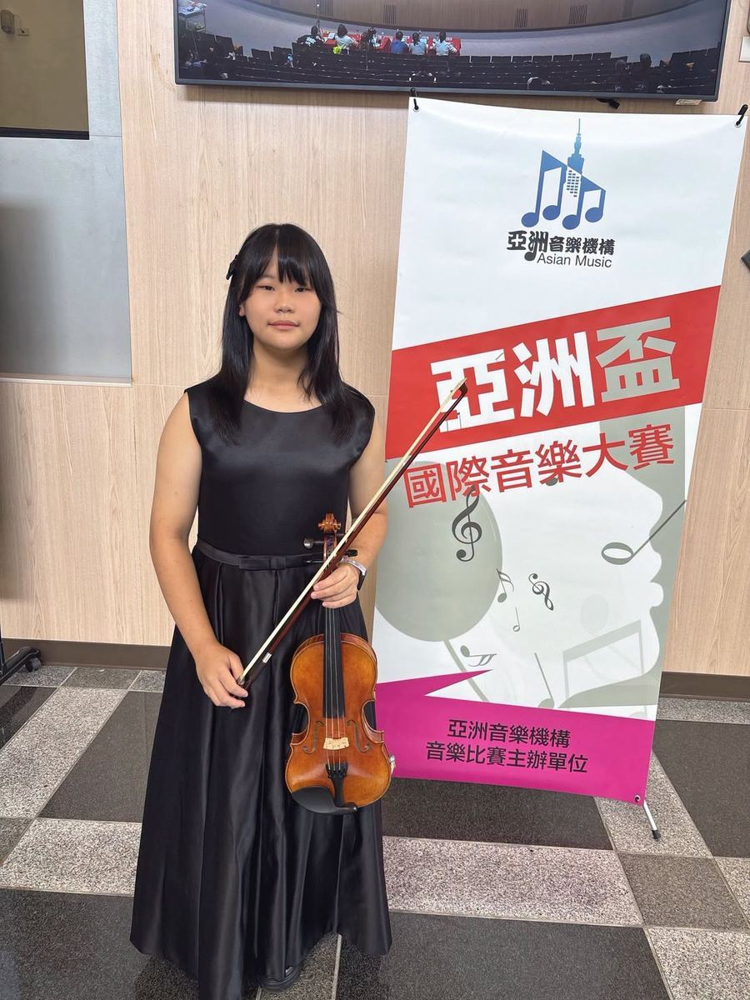
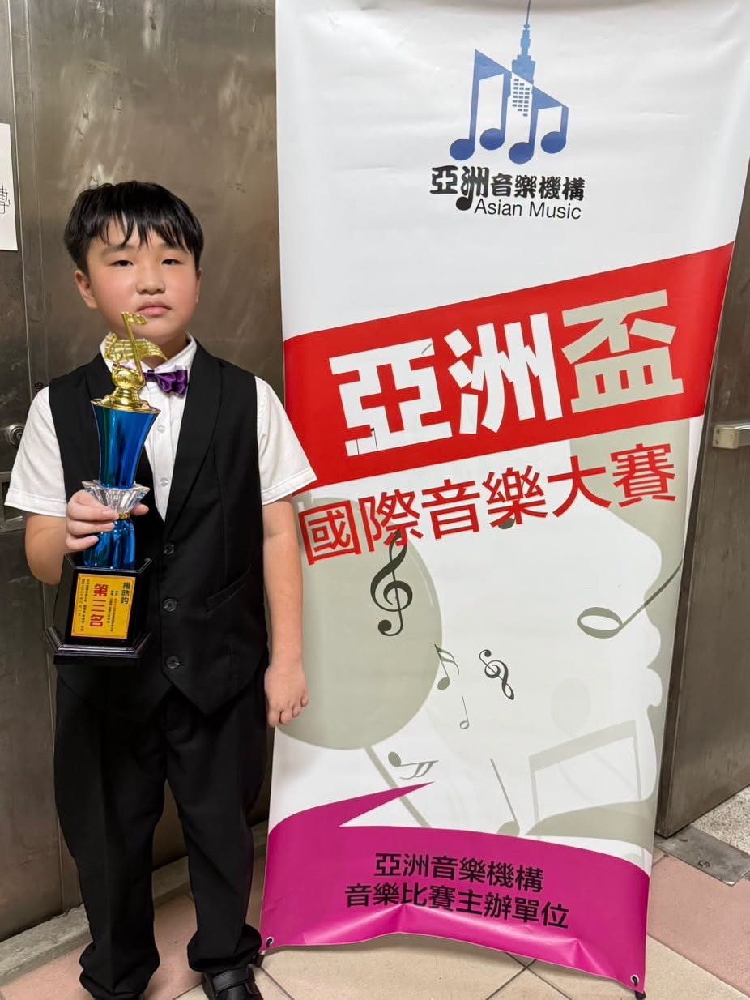
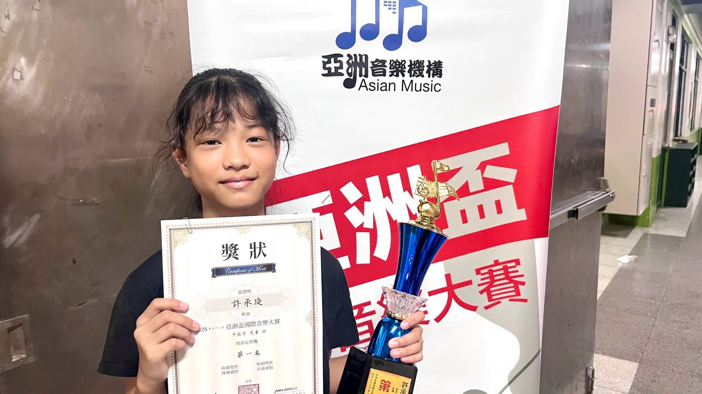

Every bow stroke tells a story of practice and passion — and this summer, that story turned into a spotlight moment! Congratulations to the young musicians of the Hsinmin Strings Ensemble for their outstanding results at the Asian Cup International Music Competition! 🏆




Yunlin–Chiayi Region · 雲嘉地區
- Violin, Senior Group — 3rd Place｜小提琴高年級組 第三名
Taichung Region · 台中地區
- Violin, Senior Group — 1st Place｜小提琴高年級組 第一名
- Violin, Intermediate Group — 3rd Place｜小提琴中年級組 第三名
- Viola, Intermediate Group — 1st Place｜中提琴中年級組 第一名
Behind every certificate and every trophy lies countless hours of rehearsal. While other children were relaxing and playing, these young musicians picked up their bows again and again, sharpening their technique and building their skills, all so they could keep improving.
It takes courage to step onto the stage, and it takes even more persistence to keep going. These students turned their everyday dedication into beautiful melodies, proving that steady effort always pays off — and that every bit of hard work becomes the nourishment for a dream.
Thank you to every brave young dreamer, and to the teachers and parents who supported them along the way. May you keep your love of music close, grow stronger with every performance, and shine with confidence on every stage ahead! 🎼
努力，終將化作舞台上最耀眼的光芒。
恭喜新民國小弦樂團的孩子們，在亞洲盃國際音樂大賽中榮獲佳績！
雲嘉地區：小提琴高年級組 第三名
台中地區：小提琴高年級組 第一名；小提琴中年級組 第三名；中提琴中年級組 第一名
每一張獎狀、每一座獎盃的背後，都藏著無數次反覆練習的汗水。當同學們享受休息、玩樂的時光時，他們選擇拿起琴弓，一遍又一遍地磨練技巧，累積實力，只為了讓自己更進步。
站上舞台需要勇氣，持續堅持更需要毅力。孩子們用專注與努力，將平日的付出化為悠揚動人的旋律，也用行動證明：只要願意踏實耕耘，每一步都會成為夢想的養分，每一次努力都將迎來美好的果實。
謝謝每一位勇敢追夢的孩子，也感謝一路陪伴與支持的老師及家長。願你們繼續帶著對音樂的熱愛，在每一次演奏中累積能力，在每一個舞台上自信發光，奏出屬於自己的精彩人生！
Words About Music & Practice英語學習角 · 和音樂與練習有關的小單字
Six key words — tap 🔊 to listen, then try the conversation and quiz.
六個關鍵字，點 🔊 聽發音，再試試對話和小考。
情境：兩個同學聊起弦樂團在音樂大賽中獲獎的事。